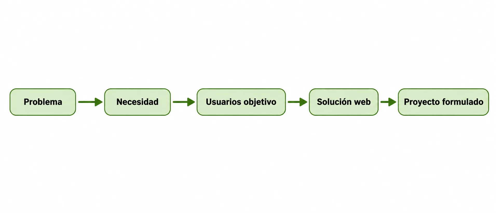
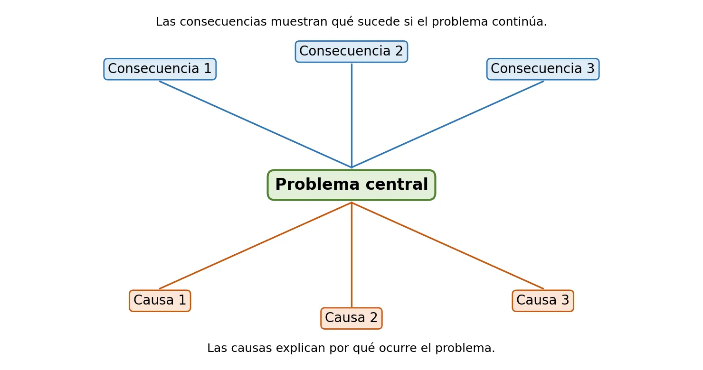

🕵️ Antes de construir, hay que entender
Todo proyecto web nace de una necesidad o de un problema real que hay que comprender antes de salir a resolverlo. Es muy tentador empezar directo por los colores, los botones o "cómo se va a ver" la página... pero si saltas ese paso, corres el riesgo de construir algo bonito que a nadie le sirve. 😅
Antes de escribir una sola línea de código deberías poder responder preguntas como: ¿qué problema se quiere resolver?, ¿quién lo sufre?, ¿dónde ocurre?, ¿por qué importa?, ¿qué necesitan realmente los usuarios?, ¿qué pasaría si nadie hace nada?
Este OVA te va a acompañar en ese primer paso de la Unidad 1: Formulación y planificación del proyecto web. Vas a aprender a distinguir problema, necesidad, usuario objetivo y solución, y vas a aplicar herramientas prácticas (lluvia de ideas, árbol de problemas, mapa de empatía) para convertir una situación real de tu entorno en la idea inicial de tu proyecto.
Una buena formulación inicial marca la diferencia en todo lo que viene después: objetivos, requerimientos, diseño, programación y despliegue. Al final de este tema, tu equipo tendrá lista una ficha inicial del proyecto 📋 que servirá de base para las siguientes guías de la unidad.
✨ Al terminar este OVA vas a poder mirar cualquier situación cotidiana y decir: "ahí hay un problema, ahí hay una necesidad... y ahí hay una posible solución web". 🚀

Objetivos de aprendizaje
- 🧠 Reconocer la diferencia entre problema, necesidad, usuario objetivo y solución dentro de la formulación inicial de un proyecto web.
- 🔎 Analizar situaciones del entorno que puedan convertirse en oportunidades para el desarrollo de una aplicación o sitio web funcional.
- 👥 Caracterizar los usuarios objetivo de un proyecto web a partir de sus necesidades, dificultades, intereses y formas de uso de la tecnología.
- 🧰 Aplicar herramientas básicas de análisis, como lluvia de ideas, árbol de problemas y mapa de empatía, para definir una idea inicial de proyecto web.
- 📋 Elaborar una ficha inicial del proyecto donde se describa el problema, la necesidad, los usuarios objetivo, el contexto y una posible solución web.
🔍 Modo exploración: recorre las 5 estaciones y suma puntos
⭐ Puntos: 0
Actividades
🎮 Modo misión activado — completa las 7 misiones de tu equipo
🏅 Misiones: 0/7
🕵️ Misión 1: Cuestionario de comprensión de la necesidad
Responde con tus palabras. Cada respuesta guardada suma puntos a tu misión.
📝 Producto esperado: El cuestionario respondido por cada integrante o de forma consensuada por el equipo.
💡 Misión 2: Lluvia de ideas de problemas reales
En equipos de 3 o 4 estudiantes, propongan mínimo cinco situaciones problemáticas de su entorno.
| Número | Situación problemática | Lugar o contexto | Personas afectadas |
|---|
📝 Producto esperado: Tabla completa con 5 situaciones y la selección justificada de las 2 más viables.
🔍 Misión 3: Análisis del problema seleccionado
Ya con la idea principal elegida, completen la ficha de análisis:
📝 Producto esperado: Ficha de análisis completa del problema elegido por el equipo.
👤 Misión 4: Caracterización de usuarios objetivo
Identifiquen mínimo dos tipos de usuarios para su proyecto (aquí tienen espacio para tres).
| Tipo de usuario | Características | Necesidades | Dificultades | Funciones que podría usar |
|---|
📝 Producto esperado: Tabla con al menos 2 tipos de usuarios caracterizados.
🌳 Misión 5: Árbol de problemas
Construyan su árbol de problemas: problema central, tres causas, tres consecuencias, necesidad y posible solución web. (También pueden dibujarlo a mano o en una herramienta digital.)

📝 Producto esperado: Árbol de problemas completo (aquí o en hoja/herramienta digital).
❤️ Misión 6: Mapa de empatía
Seleccionen uno de los usuarios principales del proyecto y completen el mapa de empatía.
📝 Producto esperado: Mapa de empatía completo de un usuario principal.
🎤 Misión 7: Socialización de la idea
Su equipo presentará la idea inicial del proyecto web ante el docente y sus compañeros, de forma presencial, para fortalecerla mediante el diálogo y recibir retroalimentación.
Marquen lo que ya tienen listo para presentar:
📝 Producto esperado: Presentación realizada y observaciones incorporadas a la ficha inicial.
📦 Evidencia de aprendizaje: Ficha inicial del proyecto
Cada equipo debe entregar una ficha inicial del proyecto web que incluya:
📊 Criterios de valoración de la actividad
| Criterio | Nivel esperado |
|---|---|
| Identificación del problema | El problema se describe de manera clara, concreta y relacionada con una necesidad real del contexto. |
| Caracterización de los usuarios | Los usuarios objetivo están claramente definidos y se explican sus principales necesidades o dificultades. |
| Coherencia problema-necesidad-solución | La solución web propuesta responde de manera lógica al problema y a la necesidad identificada. |
| Viabilidad del proyecto | La idea puede desarrollarse durante el semestre con los recursos, conocimientos y tiempo académico disponibles. |
| Argumentación de la propuesta | El equipo explica de manera clara la importancia del proyecto y sustenta su viabilidad. |
| Trabajo colaborativo | Los integrantes participan activamente en la construcción, análisis y socialización de la idea. |
| Apropiación de la retroalimentación | El equipo escucha, analiza e incorpora las observaciones pertinentes para mejorar su propuesta inicial. |
Evaluación
Comprueba lo que has aprendido. Selecciona la respuesta correcta para cada pregunta.
Recursos para profundizar
Para ampliar tu conocimiento, te recomendamos explorar los siguientes recursos:
-
Cómo hacer un árbol de problemas: ejemplo práctico
Guía paso a paso para construir un árbol de problemas, con un ejemplo aplicado a una empresa real.
Ir al recurso -
Video: cómo hacer un árbol de problemas y objetivos (Marco Lógico)
Video tutorial que explica cómo construir el árbol de problemas y el árbol de objetivos con la metodología de Marco Lógico.
Ir al recurso -
Qué es el Design Thinking: fases y ejemplos
Video en español que explica las fases del Design Thinking con ejemplos prácticos, la metodología que está detrás de identificar bien problema, necesidad y usuarios.
Ir al recurso